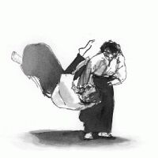

Aikido bij Sankaku
De lessen
Naast het leren van aikido, is vooral het omgaan met elkaar heel belangrijk. In de les moet iedereen zich prettig kunnen voelen: jong of oud, man of vrouw, beginner of gevorderde, lenig of stijf. Tijdens de training wordt steeds gewisseld van partner, zodat men nu eens een enthousiasteling tegenover zich heeft waarmee flink wat aan de conditie wordt gewerkt, dan weer iemand van een wat gevorderde leeftijd, zodat men wat langzamer en geconcentreerder moet werken. Door dit voortdurend aanpassen en rekening houden met een nieuwe aikido-partner wordt men uiteindelijk niet alleen soepeler van lichaam maar ook van geest.
Uiterlijke vorm
Bij aikido leer je reageren op slagen, stoten en ‘pakkingen’ op de pols, elleboog of schouders. Soms wordt gebruik gemaakt van houten wapens (mes, zwaard en stok) om op een grotere afstand van elkaar te leren werken. Door met de beweging van de aanval mee te gaan, wordt de kracht van de aanvaller uiteindelijk tegen hemzelf gekeerd. Door cirkel- en spiraal-vormige bewegingen zien de technieken er vaak heel sierlijk uit. Aan het eind van een techniek wordt de aanvaller geworpen of onder controle gehouden door middel van een klem op het gewricht. Deze klemmen werken over het algemeen via de natuurlijke bewegingsrichting van de gewrichten. Meestal wordt gewerkt in tweetallen. Om op snelheid te trainen wordt ook geoefend met meerdere aanvallers.
de betekenis van het woord Aikido
Aikido wordt in het Japans geschreven met drie tekens, Ai, Ki en Do. Vaak wordt het vertaald als ai=harmonie, ki=energie en do=weg, dus ‘de weg om harmonisch met de energie van jezelf en de ander om te gaan’. Het blijkt echter iets ingewikkelder te zijn. 'Aiki' is een Japans woord, afkomstig uit de krijgskunsten, dat met twee tekens geschreven wordt. Het betekende vroeger zoiets als: gelijk worden aan je partner. In een krijgskunst is dat niet heel handig: als je per definitie zacht reageert als je partner zacht aanvalt, of hard reageert als je partner hard aanvalt, dan ben je vrij voorspelbaar...O sensei, de grondlegger van het aikido, heeft die betekenis wat verruimd in de zin van: éénworden met je partner. Je hebt geen tegenstander, en je kunt pas goed op de ander reageren als beider bewegingen eenworden. Daar komt nog bij, dat het eerste teken, Ai, in het Japans klinkt als 'liefde,compassie' in de zin van liefde voor al wat leeft en bestaat. Dat vond o-sensei wel een mooie bijkomstigheid, zodat hij wel tevreden was met de term aikido. Zelf vond hij het helemaal niet nodig zijn bewegingen een naam te geven, maar na lang aandringen van zijn leerlingen kon hij hier wel mee accoord gaan...
Geschiedenis
Aikido is een Japanse bewegingsvorm ontwikkeld uit traditionele gevechtskunsten, uit vroeger eeuwen. Het doel van die traditionele gevechtskunsten was om in een tijd vol geweld en gevaar een aanval te kunnen overleven en een vijand uit te schakelen. Om dit te bereiken was het niet alleen belangrijk goede technieken uit te kunnen voeren, maar ook de zenuwen te beheersen. Daarom besteedde men zoveel aandacht aan oefeningen om innerlijke rust en harmonie te verkrijgen. Deze oude gevechtskunsten vormen de basis van het huidige aikido. Men probeert nu niet meer een tegenstander te beschadigen, maar zijn aanval te neutraliseren door zijn eigen kracht tegen hem te keren.
